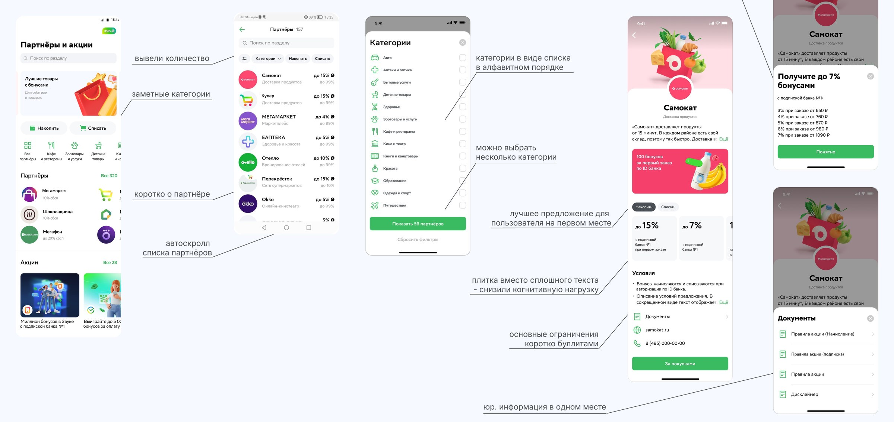
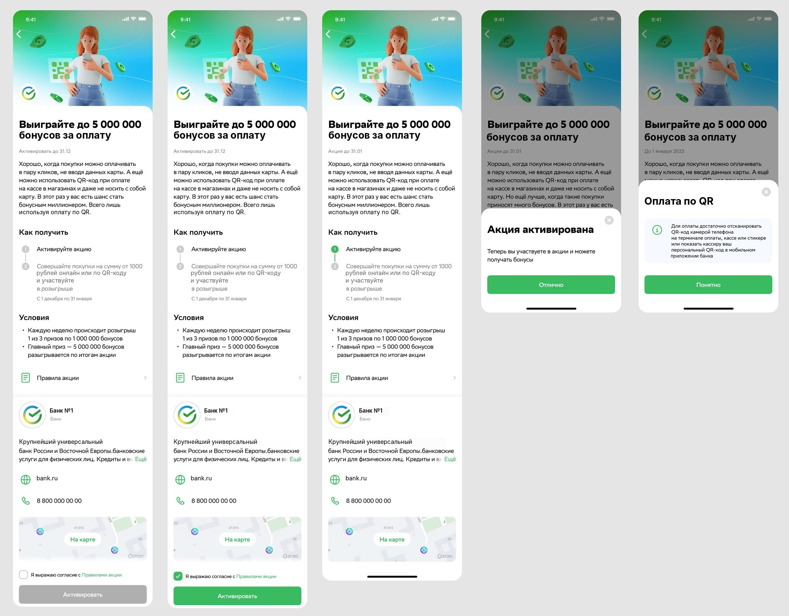

{{t.brand}}: {{t.h1}}
{{t.lead}}
{{f.k}}{{f.v}}
{{t.statLabel}}{{t.statNum}}{{t.statUnit}}{{t.statSub}}
01
{{t.ctxTitle}}
{{t.ctx1}}
{{p}}
{{t.voicesNote}}
{{vg.k}}
- {{it}}
02
{{t.rsTitle}}
{{t.rsSub}}
{{st.n}}{{st.k}}
{{sd.k}}{{sd.n}}{{sd.v}}
03
{{t.rdTitle}}
{{t.rdText}}

{{s.num}}
{{s.title}}
{{shot.tag}}
{{tx.k}}
{{tx.v}}
07
{{t.accTitle}}
{{t.acc1}}

{{t.entryLabel}}
{{e.label}}
08
{{t.mpTitle}}
{{t.mpText}}
{{mp.n}}{{mp.u}}{{mp.k}}
- {{it}}
09
{{t.tcTitle}}
{{t.tcText}}
{{st.n}}{{st.k}}
10
{{t.outTitle}}
{{t.mainLabel}}
{{t.main}}
{{o.k}}
{{o.v}}
{{g.final1}}{{t.finalMark}}